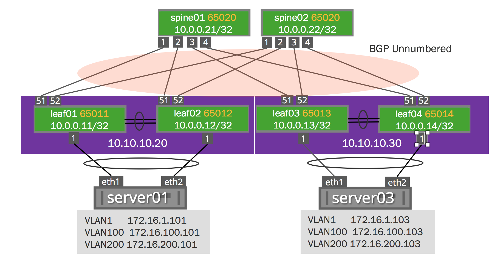

Ethernet Virtual Private Network - EVPN
EVPN requires Cumulus Linux version 3.2.1 or newer.
Only VNI values less than 65535 are supported.
Ethernet Virtual Private Network (EVPN) provides a control plane for VXLANs in Cumulus Linux, with the following functionality:
-
VNI membership exchange between VTEPs using the EVPN type-3 (Inclusive Multicast Ethernet Tag) route.
-
Exchange of MACs learned on local bridge ports using the EVPN type-2 (MAC/IP Advertisement) route.
-
Support for MAC mobility through exchange of the MAC Mobility Extended community.
-
Support for dual-attached hosts via VXLAN active-active mode; note that MAC synchronization between the peer switches is done using MLAG.
Contents
Installing the EVPN Package
Any existing EVPN configuration on the system should be deleted prior to installing this version of EVPN.
Before proceeding, ensure the version of Cumulus Linux is 3.2.1 or higher.
To install EVPN on a switch:
-
Open the /etc/apt/sources.list file in a text editor.
-
Uncomment the early access repo lines and save the file:
#deb http://repo3.cumulusnetworks.com/repo CumulusLinux-3-early-access cumulus#deb-src http://repo3.cumulusnetworks.com/repo CumulusLinuz-3-early-access cumulusEVPN has been engineered and tested to be production-ready. However, as EVPN was made Generally Available (GA) post Cumulus Linux 3.2.1 release, the packages have been left in the Early Access (EA) repository to create minimal end-user disruption, and to ease deployment and upgrade processes. These packages will be moved to the main repository in an upcoming release, and will ship as part of the base image.
-
Run the following commands to install the EVPN package in Cumulus Linux:
cumulus@switch:~$ sudo apt-get updatecumulus@switch:~$ sudo apt-get install cumulus-evpncumulus@switch:~$ sudo apt-get upgrade -
Check your Quagga version using the dpkg -l quagga command. Please make sure you are running version 1.0.0+cl3eau8 or newer.
cumulus@leaf01:~$ dpkg -l quaggaDesired=Unknown/Install/Remove/Purge/Hold| Status=Not/Inst/Conf-files/Unpacked/halF-conf/Half-inst/trig-aWait/Trig-pend|/ Err?=(none)/Reinst-required (Status,Err: uppercase=bad)||/ Name Version Architecture Description+++-========================-=================-=================-=====================================================ii quagga 1.0.0+cl3eau8 amd64 BGP/OSPF/RIP routing daemon
Enabling Quagga
Quagga needs to be enabled prior to using EVPN.
-
Open /etc/quagga/daemons file in a text editor:
cumulus@switch:~$ sudo nano /etc/quagga/daemons -
Change the no to yes for zebra and bgpd, then save the file:
zebra=yesbgpd=yes -
Enable and start Quagga using the systemctl commands:
cumulus@switch:~$ sudo systemctl enable quagga.servicecumulus@switch:~$ sudo systemctl start quagga.service
Configuring EVPN
Enabling EVPN between BGP Neighbors
You enable EVPN between BGP neighbors by adding the address family evpn to the existing neighbor address-family activation command.
For a non-VTEP device, such as a spine switch, that is merely participating in EVPN route exchange (as in, the network deployment uses hop-by-hop eBGP or the switch is acting as an iBGP route reflector), activating the interface for the EVPN address family is the only configuration needed.
This command does not result in BGP knowing about the local VNIs defined on the system and advertising them to peers. This requires additional configuration, as described below.
EVPN supports the configuration of only these two BGP neighbor address-family-specific configurations: allowas-in and route-reflector-client.
To configure an EVPN route exchange with a BGP peer, the peer or peer-group must be activated within the EVPN address-family in Quagga:
router bgp 65000 address-family evpn neighbor swp1 activateEnabling EVPN in an iBGP Environment with an OSPF Underlay
EVPN can be deployed with an OSPF or static route underlay if needed. This is a more complex configuration than using eBGP. In this case, iBGP advertises EVPN routes directly between VTEPs, and the spines are unaware of EVPN or BGP.
The leaf switches peer with each other in a full mesh within the EVPN address family without using route reflectors. The leafs generally peer to their loopback addresses, which are advertised in OSPF. The receiving VTEP imports routes into a specific VNI with a matching route target community.
interface lo ip ospf area 0.0.0.0!interface swp50 ip ospf area 0.0.0.0 ip ospf network point-to-pointinterface swp51 ip ospf area 0.0.0.0 ip ospf network point-to-point!router bgp 65020 neighbor 10.1.1.2 remote-as internal neighbor 10.1.1.3 remote-as internal neighbor 10.1.1.4 remote-as internal ! address-family evpn neighbor 10.1.1.2 activate neighbor 10.1.1.3 activate neighbor 10.1.1.4 activate advertise-all-vni exit-address-family !Router ospf Ospf router-id 10.1.1.1 Passive-interface loAdvertising All VNIs
A single configuration variable enables the BGP control plane for all VNIs configured on the switch. Set the variable advertise-all-vni to provision all locally configured VNIs to be advertised by the BGP control plane. Quagga is not aware of any local VNIs and MACs associated with that VNI until advertise-all-vni is configured.
This configuration is only needed on leaf switches that are VTEPs.
router bgp 65000 address-family evpn neighbor swp1 activate advertise-all-vniEVPN routes received from a BGP peer do get accepted, even without advertise-all-vni configured. These routes are maintained in the global EVPN routing table. However, they only become effective (that is, imported into the per-VNI routing table and appropriate entries installed in the kernel) when the VNI corresponding to the received route is locally known.
Enabling EVPN with Route Distinguishers (RDs) and Route Targets (RTs)
EVPN can be provisioned with RDs and RTs either by automatically configuring them, or by manually defining them. In each case, the advertise-vni option is used on each VTEP (as shown in the example configuration section described later in this chapter).
VNIs can be configured in Quagga either prior to or after enabling EVPN to advertise all VNIs (through advertise-all-vni, as described above). When a local VNI is learned and there is no explicit configuration for that VNI, the route distinguisher (RD) and import and export route targets (RTs) for this VNI are automatically derived — the RD uses “RouterId:VNI” and both RTs use “AS:VNI”.
For eBGP EVPN peering, since the peers are in a different AS, using an automatic RT of "AS:VNI" does not work for route import. Thus, the import RT is actually treated as "*:VNI" for determining which received routes are applicable to a particular VNI. This only applies when the import RT is auto-derived and not configured.
Enabling EVPN with Automatic RDs and RTs
The advertise-all-vni option is sufficient for provisioning EVPN with RDs and RTs:
router bgp 65000 address-family evpn neighbor swp1 activate advertise-all-vniEnabling EVPN with User-defined RDs and RTs for Some VNIs
To manually define RDs and RTs, use the vni option to configure the switch:
router bgp 65100 address-family evpn neighbor SPINE activate advertise-vni vni 10200 rd 172.16.10.1:20 route-target import 65100:20These commands are per VNI and must be specified under address-family evpn in BGP.
If you delete the RD or RT later, it reverts back to its corresponding default value.
Disabling Data Plane MAC Learning over VXLAN Tunnels
When EVPN is provisioned, data plane MAC learning should be disabled for VxLAN interfaces to avoid race conditions between control plane learning and data plane learning. In the /etc/network/interfaces file, configure the bridge-learning value to off:
auto vxlan200iface vxlan200 vxlan-id 10200 vxlan-local-tunnelip 10.0.0.1 bridge-learning off bridge-access 200Handling BUM Traffic
With EVPN, the only method of handling BUM traffic is Head End Replication (HER). HER is enabled by default, as it is when Lightweight Network Virtualization (LNV) is used.
EVPN and VXLAN Active-Active Mode
There is no specific configuration to enable EVPN to work with VXLAN active-active mode. Both switches in the MLAG pair establish EVPN peering with other EVPN speakers (for example, with spine switches, if using hop-by-hop eBGP) and inform about their locally known VNIs and MACs. When MLAG is active, both switches announce this information with the shared anycast IP address.
MLAG syncs information between the two switches in the MLAG pair, EVPN does not synchronize. Therefore, Cumulus Networks recommends you do not configure EVPN peering between the MLAG switches over the peerlink.
Example Configuration
The following configurations are used throughout this chapter. You can find the flat-file configurations for the network devices in the Cumulus Networks GitHub repository. Only a subset is shown here for brevity (not shown are configurations for leaf03, leaf04, server03, server04). Here is the topology diagram:

leaf01 and leaf02 Configurations
auto loiface lo inet loopback alias loopback address 10.0.0.11/32 clagd-vxlan-anycast-ip 10.10.10.20auto eth0iface eth0 inet dhcp# uplinksauto swp51iface swp51auto swp52iface swp52#host connectionsauto swp1iface swp1auto server01iface server01 alias server01 MLAG bond bond-slaves swp1 clag-id 1auto peerlinkiface peerlink alias MLAG peerlink bond bond-slaves swp49 swp50auto peerlink.4094iface peerlink.4094 address 169.254.1.1/30 clagd-peer-ip 169.254.1.2 clagd-backup-ip 192.168.200.12 clagd-sys-mac 44:38:39:FF:40:94auto bridgeiface bridge bridge-ports server01 peerlink vxlan10001 vxlan10100 vxlan10200 bridge-vlan-aware yes bridge-vids 1 100 200 bridge-pvid 1auto vxlan10001iface vxlan10001 vxlan-id 10001 vxlan-local-tunnelip 10.0.0.11 bridge-access 1 bridge-learning offauto vxlan10100iface vxlan10100 vxlan-id 10100 vxlan-local-tunnelip 10.0.0.11 bridge-access 100 bridge-learning offauto vxlan10200iface vxlan10200 vxlan-id 10200 vxlan-local-tunnelip 10.0.0.11 bridge-access 200 bridge-learning off |
auto loiface lo inet loopback alias loopback address 10.0.0.12/32 clagd-vxlan-anycast-ip 10.10.10.20auto eth0iface eth0 inet dhcp# uplinksauto swp51iface swp51auto swp52iface swp52#host connectionsauto swp1iface swp1auto server01iface server01 alias server01 MLAG bond bond-slaves swp1 clag-id 1auto peerlinkiface peerlink alias MLAG peerlink bond bond-slaves swp49 swp50auto peerlink.4094iface peerlink.4094 address 169.254.1.2/30 clagd-peer-ip 169.254.1.1 clagd-backup-ip 192.168.200.11 clagd-sys-mac 44:38:39:FF:40:94auto bridgeiface bridge bridge-ports server01 peerlink vxlan10001 vxlan10100 vxlan10200 bridge-vlan-aware yes bridge-vids 1 100 200 bridge-pvid 1auto vxlan10001iface vxlan10001 vxlan-id 10001 vxlan-local-tunnelip 10.0.0.12 bridge-access 1 bridge-learning offauto vxlan10100iface vxlan10100 vxlan-id 10100 vxlan-local-tunnelip 10.0.0.12 bridge-access 100 bridge-learning offauto vxlan10200iface vxlan10200 vxlan-id 10200 vxlan-local-tunnelip 10.0.0.12 bridge-access 200 bridge-learning off |
!interface swp51 ipv6 nd ra-interval 10 no ipv6 nd suppress-ra!interface swp52 ipv6 nd ra-interval 10 no ipv6 nd suppress-ra!router bgp 65011 bgp router-id 10.0.0.11 bgp bestpath as-path multipath-relax neighbor FABRIC peer-group neighbor FABRIC remote-as external neighbor FABRIC description Internal FABRIC Network neighbor FABRIC capability extended-nexthop neighbor swp51 interface peer-group FABRIC neighbor swp52 interface peer-group FABRIC ! address-family ipv4 unicast network 10.0.0.11/32 network 10.10.10.20/32 exit-address-family !! address-family ipv6 unicast neighbor FABRIC activate exit-address-family ! address-family evpn neighbor FABRIC activate advertise-all-vni exit-address-family exit!line vty!end |
!interface swp51 ipv6 nd ra-interval 10 no ipv6 nd suppress-ra!interface swp52 ipv6 nd ra-interval 10 no ipv6 nd suppress-ra!router bgp 65012 bgp router-id 10.0.0.12 bgp bestpath as-path multipath-relax neighbor FABRIC peer-group neighbor FABRIC remote-as external neighbor FABRIC description Internal FABRIC Network neighbor FABRIC capability extended-nexthop neighbor swp51 interface peer-group FABRIC neighbor swp52 interface peer-group FABRIC ! address-family ipv4 unicast network 10.0.0.12/32 network 10.10.10.20/32 exit-address-family !! address-family ipv6 unicast neighbor FABRIC activate exit-address-family ! address-family evpn neighbor FABRIC activate advertise-all-vni exit-address-family exit!line vty!end |
spine01 and spine02 Configurations
auto loiface lo inet loopback address 10.0.0.21/32auto eth0iface eth0 inet dhcp# downlinksauto swp1iface swp1auto swp2iface swp2auto swp3iface swp3auto swp4iface swp4 |
auto loiface lo inet loopback address 10.0.0.22/32auto eth0iface eth0 inet dhcp# downlinksauto swp1iface swp1auto swp2iface swp2auto swp3iface swp3auto swp4iface swp4 |
!log syslog!interface swp1 ipv6 nd ra-interval 10 no ipv6 nd suppress-ra!interface swp2 ipv6 nd ra-interval 10 no ipv6 nd suppress-ra!interface swp3 ipv6 nd ra-interval 10 no ipv6 nd suppress-ra!interface swp4 ipv6 nd ra-interval 10 no ipv6 nd suppress-ra!router bgp 65020 bgp router-id 10.0.0.21 bgp bestpath as-path multipath-relax neighbor fabric peer-group neighbor fabric remote-as external neighbor fabric description Internal Fabric Network neighbor fabric capability extended-nexthop neighbor swp1 interface peer-group fabric neighbor swp2 interface peer-group fabric neighbor swp3 interface peer-group fabric neighbor swp4 interface peer-group fabric ! address-family ipv4 unicast network 10.0.0.21/32 exit-address-family !! address-family ipv6 unicast neighbor fabric activate exit-address-family ! address-family evpn neighbor fabric activate exit-address-family exit!line vty!end |
!log syslog!interface swp1 ipv6 nd ra-interval 10 no ipv6 nd suppress-ra!interface swp2 ipv6 nd ra-interval 10 no ipv6 nd suppress-ra!interface swp3 ipv6 nd ra-interval 10 no ipv6 nd suppress-ra!interface swp4 ipv6 nd ra-interval 10 no ipv6 nd suppress-ra!router bgp 65020 bgp router-id 10.0.0.22 bgp bestpath as-path multipath-relax neighbor fabric peer-group neighbor fabric remote-as external neighbor fabric description Internal Fabric Network neighbor fabric capability extended-nexthop neighbor swp1 interface peer-group fabric neighbor swp2 interface peer-group fabric neighbor swp3 interface peer-group fabric neighbor swp4 interface peer-group fabric ! address-family ipv4 unicast network 10.0.0.22/32 exit-address-family !! address-family ipv6 unicast neighbor fabric activate exit-address-family ! address-family evpn neighbor fabric activate exit-address-family exit!line vty!end |
server01 and server02 Configurations
auto eth0iface eth0 inet dhcpauto bond0iface bond0 bond-slaves eth1 eth2 address 172.16.1.101/24auto bond0.100iface bond0.100 address 172.16.100.101/24auto bond0.200iface bond0.200 address 172.16.200.101/24 |
auto eth0iface eth0 inet dhcpauto eth2iface eth2 address 172.16.1.102/24auto eth2.100iface eth2.100 address 172.16.100.102/24auto eth2.200iface eth2.200 address 172.16.200.102/24 |
Testing Connectivity between Servers
SSH to server01 and ping the VLAN1 IP address on server02:
user@server01:~$ ping 172.16.1.102PING 172.16.1.102 (172.16.1.102) 56(84) bytes of data.64 bytes from 172.16.1.102: icmp_seq=1 ttl=64 time=2.52 ms64 bytes from 172.16.1.102: icmp_seq=2 ttl=64 time=2.74 ms^C--- 172.16.1.102 ping statistics ---2 packets transmitted, 2 received, 0% packet loss, time 1001msrtt min/avg/max/mdev = 2.528/2.638/2.749/0.121 msThe following table lists all the servers IP addresses to test connectivity across the L3 fabric:
|
|
server01 |
server02 |
server03 |
server04 |
|
VLAN1 |
172.16.1.101 |
172.16.1.102 |
172.16.1.103 |
172.16.1.104 |
|
VLAN100 |
172.16.100.101 |
172.16.100.102 |
172.16.100.103 |
172.16.100.104 |
|
VLAN200 |
172.16.200.101 |
172.16.200.102 |
172.16.200.103 |
172.16.200.104 |
Cumulus Linux Output Commands
You can use various iproute2 commands to examine links, VLAN mappings and displaying bridge FDB data:
-
ip [-d] link show
-
bridge link show
-
bridge vlan show
-
bridge [-s] fdb show
For example, the output from the following bridge fdb show command reveals information relevant only for a VTEP.
-
3 remote VTEPs (10.0.0.5, 10.0.0.6 and 80.80.80.2) for each of the 2 VNIs.
-
MAC address 00:02:00:00:00:03 is a local MAC learned over a bond interface while MAC address 00:02:00:00:00:08 is a remote MAC from VTEP 80.80.80.2 for VNI 10100 (vtep100).
-
The entries with MAC “00:00:00:00:00:00” are for BUM traffic replication.
cumulus@switch:~$ bridge fdb show00:02:00:00:00:0f dev swp3 master bridge permanent00:02:00:00:00:01 dev swp3 vlan 1 master bridge 00:02:00:00:00:04 dev peerlink vlan 1 master bridge 00:02:00:00:00:12 dev peerlink master bridge permanent92:b0:8f:b6:82:7b dev vtep100 master bridge permanent00:02:00:00:00:08 dev vtep100 vlan 100 master bridge 00:00:00:00:00:00 dev vtep100 dst 10.0.0.5 self permanent00:00:00:00:00:00 dev vtep100 dst 10.0.0.6 self permanent00:00:00:00:00:00 dev vtep100 dst 80.80.80.2 self permanent00:02:00:00:00:08 dev vtep100 dst 80.80.80.2 self 5e:75:42:b8:47:e6 dev vtep200 master bridge permanent00:00:00:00:00:00 dev vtep200 dst 10.0.0.5 self permanent00:00:00:00:00:00 dev vtep200 dst 10.0.0.6 self permanent00:00:00:00:00:00 dev vtep200 dst 80.80.80.2 self permanent00:02:00:00:00:10 dev bond0 master bridge permanent02:02:00:00:00:03 dev bond0 vlan 1 master bridge 02:02:00:00:00:02 dev bond0 vlan 1 master bridge 00:02:00:00:00:03 dev bond0 vlan 100 master bridge BGP Output Commands
The following commands are not unique to EVPN but help troubleshoot connectivity and route propagation. You can display the L3 fabric by running the Quagga show ip bgp summary command on one of the spines:
cumulus@spine01:~$ sudo vtyshspine01# show ip bgp sumBGP router identifier 10.0.0.21, local AS number 65020 vrf-id 0BGP table version 7RIB entries 9, using 1152 bytes of memoryPeers 4, using 83 KiB of memoryPeer groups 1, using 72 bytes of memoryNeighbor V AS MsgRcvd MsgSent TblVer InQ OutQ Up/Down State/PfxRcdleaf01(swp1) 4 65011 1038 1012 0 0 0 00:49:11 1leaf02(swp2) 4 65012 1042 1018 0 0 0 00:49:30 1leaf03(swp3) 4 65013 1013 995 0 0 0 00:41:20 1leaf04(swp4) 4 65014 1026 1012 0 0 0 00:49:10 1Total number of neighbors 4You can see the loopback addresses for all the network devices participating in BGP by running the show ip bgp command:
cumulus@spine01:~$ sudo vtyshspine01# show ip bgpBGP table version is 7, local router ID is 10.0.0.21Status codes: s suppressed, d damped, h history, * valid, > best, = multipath, i internal, r RIB-failure, S Stale, R RemovedOrigin codes: i - IGP, e - EGP, ? - incomplete Network Next Hop Metric LocPrf Weight Path*> 10.0.0.11/32 swp1 0 0 65011 i*> 10.0.0.12/32 swp2 0 0 65012 i*> 10.0.0.13/32 swp3 0 0 65013 i*> 10.0.0.14/32 swp4 0 0 65014 i*> 10.0.0.21/32 0.0.0.0 0 32768 iDisplayed 5 out of 5 total prefixesEVPN Output Commands
The following commands are unique to EVPN address-families and VXLAN. Note that just because two network nodes are BGP peers does not mean they are EVPN address-family peers or are exchanging VXLAN information.
Displaying EVPN address-family Peers
The network device participating in BGP EVPN address-family can be shown using the show bgp evpn summary command
cumulus@leaf01:~$ sudo vtyshleaf01# show bgp evpn summaryBGP router identifier 10.0.0.1, local AS number 65001 vrf-id 0BGP table version 0RIB entries 15, using 1920 bytes of memoryPeers 2, using 42 KiB of memoryPeer groups 1, using 72 bytes of memoryNeighbor V AS MsgRcvd MsgSent TblVer InQ OutQ Up/Down State/PfxRcds1(swp1) 4 65100 16 22 0 0 0 00:01:29 6s2(swp2) 4 65100 16 22 0 0 0 00:01:28 6Total number of neighbors 2You cannot configure EVPN address families within a VRF.
Displaying VNIs
You can display the configured VNIs on a network device participating in BGP EVPN by running the show bgp evpn vni command. This command works only when run on a VTEP.
The following example examines leaf01, where 3 VNIs are configured; VNIs 10100 and 10200 are purely system-defined in /etc/network/interfaces. The RD and RT values for these VNIs have been automatically derived as described earlier. The * indicates that both VNIs exist in the kernel, whereas VNI 20100 is user-configured in BGP with a non-default RD and export RT, but does not yet exist in the kernel:
cumulus@leaf01:~$ sudo vtyshleaf01# show bgp evpn vniAdvertise All VNI flag: EnabledNumber of VNIs: 3Flags: * - Kernel VNI Orig IP RD Import RT Export RT * 10200 80.80.80.1 10.0.0.1:10200 65001:10200 65001:10200 20100 10.0.0.1 65001:20100 65001:20100 1:20100 * 10100 80.80.80.1 10.0.0.1:10100 65001:10100 65001:10100 leaf01# show bgp evpn vni 10100VNI: 10100 (known to the kernel) RD: 10.0.0.1:10100 Originator IP: 80.80.80.1 Import Route Target: 65001:10100 Export Route Target: 65001:10100leaf01# show bgp evpn vni 20100VNI: 20100 RD: 65001:20100 Originator IP: 10.0.0.1 Import Route Target: 65001:20100 Export Route Target: 1:20100The corresponding BGP configuration for VNI 20100 is follows (only the EVPN section is shown):
address-family evpn neighbor SPINE activate advertise-all-vni vni 20100 rd 65001:20100 route-target export 1:20100 exit-vni exit-address-familyDisplaying EVPN VXLANs
Run the show evpn vni [<vni>] command to list all local configured VXLANs and remote VTEPs. This command only works when run on a VTEP.
The following output indicates that VNI 10100 is present on 3 remote VTEPs (10.0.0.5, 10.0.0.6 and 80.80.80.2) while VNI 10200 is present on 2 remote VTEPs (10.0.0.6 and 80.80.80.2):
cumulus@leaf01:~$ sudo vtyshleaf01# show evpn vniNumber of VNIs: 2VNI VxLAN IF VTEP IP # MACs Remote VTEPs 10200 vtep200 80.80.80.1 2 80.80.80.2 10.0.0.6 10100 vtep100 80.80.80.1 2 80.80.80.2 10.0.0.6 10.0.0.5 To see the EVPN configuration for a single VXLAN:
cumulus@leaf01:~$ sudo vtyshleaf01# show evpn vni 10100VNI: 10100 VxLAN interface: vtep100 ifIndex: 11 VTEP IP: 80.80.80.1 Remote VTEPs for this VNI: 80.80.80.2 10.0.0.6 10.0.0.5 Number of MACs (local and remote) known for this VNI: 2Examining Local and Remote MAC Addresses for a VNI in Quagga
You can examine all local and remote MAC addresses for a VNI by running show evpn mac vni <vni>.
cumulus@leaf01:~$ sudo vtyshleaf01# show evpn mac vni 10100Number of MACs (local and remote) known for this VNI: 2MAC Type Intf/Remote VTEP VLAN 00:02:00:00:00:03 local bond0 100 00:02:00:00:00:08 remote 80.80.80.2 You can examine MAC addresses across VNIs using show evpn mac vni all:
cumulus@leaf01:~$ sudo vtyshleaf01# show evpn mac vni allVNI 10200 #MACs (local and remote) 2MAC Type Intf/Remote VTEP VLAN 00:02:00:00:00:01 local swp3 200 00:02:00:00:00:0b remote 10.0.0.6 VNI 10100 #MACs (local and remote) 2MAC Type Intf/Remote VTEP VLAN 00:02:00:00:00:03 local bond0 100 00:02:00:00:00:08 remote 80.80.80.2 You can examine MAC addresses for a remote VTEP and/or query a specific MAC address. This command only works when run on a VTEP:
cumulus@leaf01:~$ sudo vtyshleaf01# show evpn mac vni 10100 mac 00:02:00:00:00:08MAC: 00:02:00:00:00:08 Remote VTEP: 80.80.80.2leadf01# show evpn mac vni 10100 vtep 80.80.80.2MAC Type Intf/Remote VTEP VLAN 00:02:00:00:00:08 remote 80.80.80.2 Displaying the Global BGP EVPN Routing Table
Run the show bgp evpn route [type <multicast | macip>] command to display all EVPN routes at the same time:
cumulus@leaf01:~$ sudo vtyshleaf01# show bgp evpn routeBGP table version is 0, local router ID is 10.0.0.1Status codes: s suppressed, d damped, h history, * valid, > best, i - internalOrigin codes: i - IGP, e - EGP, ? - incompleteEVPN type-2 prefix: [2]:[ESI]:[EthTag]:[MAClen]:[MAC]EVPN type-3 prefix: [3]:[EthTag]:[IPlen]:[OrigIP] Network Next Hop Metric LocPrf Weight PathRoute Distinguisher: 10.0.0.1:10100*> [2]:[0]:[0]:[48]:[00:02:00:00:00:03] 80.80.80.1 32768 i*> [3]:[0]:[32]:[80.80.80.1] 80.80.80.1 32768 iRoute Distinguisher: 10.0.0.1:10200*> [2]:[0]:[0]:[48]:[00:02:00:00:00:01] 80.80.80.1 32768 i*> [3]:[0]:[32]:[80.80.80.1] 80.80.80.1 32768 iRoute Distinguisher: 10.0.0.3:10100*> [2]:[0]:[0]:[48]:[00:02:00:00:00:08] 80.80.80.2 0 65100 65003 i* [2]:[0]:[0]:[48]:[00:02:00:00:00:08] 80.80.80.2 0 65100 65003 i* [3]:[0]:[32]:[80.80.80.2] 80.80.80.2 0 65100 65003 i*> [3]:[0]:[32]:[80.80.80.2] 80.80.80.2 0 65100 65003 iRoute Distinguisher: 10.0.0.3:10200* [3]:[0]:[32]:[80.80.80.2] 80.80.80.2 0 65100 65003 i*> [3]:[0]:[32]:[80.80.80.2] 80.80.80.2 0 65100 65003 iRoute Distinguisher: 10.0.0.4:10100*> [2]:[0]:[0]:[48]:[00:02:00:00:00:08] 80.80.80.2 0 65100 65004 i* [2]:[0]:[0]:[48]:[00:02:00:00:00:08] 80.80.80.2 0 65100 65004 i* [3]:[0]:[32]:[80.80.80.2] 80.80.80.2 0 65100 65004 i*> [3]:[0]:[32]:[80.80.80.2] 80.80.80.2 0 65100 65004 i(truncated) Displayed 15 prefixes (26 paths)Output Explained
-
The output *> [3]:[0]:[32]:[10.0.0.14] is explained as follows:
Output
Explanation
[3]
Type 3 EVPN route
[0]
Ethernet tag
[32]
IP address length of 32 bits
10.0.0.14
IPv4 address originating this route
Displaying EVPN Type-2 (MAC/IP) Routes
To display only EVPN type-2 (MAC/IP) routes, run show bgp evpn route type macip. The output displays the EVPN route-type fields followed by type-specific fields:
-
Type 2 route: [type]:[ESI]:[ET]:[MAC length]:[MAC]
-
Type 2 route with ARP suppression: [type]:[ESI]:[ET]:[MAC length]:[MAC]:[IP length]:[IP]
-
The Ethernet Segment Id (ESI) and Ethernet Tag (ET) are always 0.
-
-
Type 3 route: [type]:[ET]:[Originating Router IP]
-
The Ethernet Tag (ET) is always 0.
-
The "Originating Router IP" is the VTEP local IP for the corresponding VNI.
-
cumulus@leaf01:~$ sudo vtyshleaf01# show bgp evpn route type macipBGP table version is 0, local router ID is 10.0.0.1Status codes: s suppressed, d damped, h history, * valid, > best, i - internalOrigin codes: i - IGP, e - EGP, ? - incompleteEVPN type-2 prefix: [2]:[ESI]:[EthTag]:[MAClen]:[MAC]EVPN type-3 prefix: [3]:[EthTag]:[IPlen]:[OrigIP] Network Next Hop Metric LocPrf Weight PathRoute Distinguisher: 10.0.0.1:10100*> [2]:[0]:[0]:[48]:[00:02:00:00:00:03] 80.80.80.1 32768 iRoute Distinguisher: 10.0.0.1:10200*> [2]:[0]:[0]:[48]:[00:02:00:00:00:01] 80.80.80.1 32768 iRoute Distinguisher: 10.0.0.3:10100*> [2]:[0]:[0]:[48]:[00:02:00:00:00:08] 80.80.80.2 0 65100 65003 i* [2]:[0]:[0]:[48]:[00:02:00:00:00:08] 80.80.80.2 0 65100 65003 iRoute Distinguisher: 10.0.0.4:10100*> [2]:[0]:[0]:[48]:[00:02:00:00:00:08] 80.80.80.2 0 65100 65004 i* [2]:[0]:[0]:[48]:[00:02:00:00:00:08] 80.80.80.2 0 65100 65004 iRoute Distinguisher: 10.0.0.6:10200*> [2]:[0]:[0]:[48]:[00:02:00:00:00:0b] 10.0.0.6 0 65100 65006 i* [2]:[0]:[0]:[48]:[00:02:00:00:00:0b] 10.0.0.6 0 65100 65006 iDisplayed 5 prefixes (8 paths) (of requested type)Displaying a Specific EVPN Route
To drill down on a specific route for more information, run the show bgp evpn route rd <VTEP:VXLAN> command. The following example shows leaf01 receiving a type-2 route and a type-3 route from two spine switches (s1 and s2). The actual remote VTEP is 80.80.80.2, specified in the next hop of the route. Both routes contain the BGP Encapsulation extended community (ET) with value 8 (VxLAN); the type-2 route also carries the VNI (10100).
cumulus@leaf01:~$ sudo vtyshleaf01# show bgp evpn route rd 10.0.0.4:10100EVPN type-2 prefix: [2]:[ESI]:[EthTag]:[MAClen]:[MAC]EVPN type-3 prefix: [3]:[EthTag]:[IPlen]:[OrigIP]BGP routing table entry for 10.0.0.4:10100:[2]:[0]:[0]:[48]:[00:02:00:00:00:08]Paths: (2 available, best #1) Advertised to non peer-group peers: s1(swp1) s2(swp2) Route [2]:[0]:[0]:[48]:[00:02:00:00:00:08] VNI 10100 65100 65004 80.80.80.2 from s1(swp1) (20.0.0.1) Origin IGP, localpref 100, valid, external, bestpath-from-AS 65100, best Extended Community: RT:65004:10100 ET:8 AddPath ID: RX 0, TX 45 Last update: Thu Jan 12 19:42:58 2017 Route [2]:[0]:[0]:[48]:[00:02:00:00:00:08] VNI 10100 65100 65004 80.80.80.2 from s2(swp2) (20.0.0.2) Origin IGP, localpref 100, valid, external Extended Community: RT:65004:10100 ET:8 AddPath ID: RX 0, TX 44 Last update: Thu Jan 12 19:42:58 2017BGP routing table entry for 10.0.0.4:10100:[3]:[0]:[32]:[80.80.80.2]Paths: (2 available, best #2) Advertised to non peer-group peers: s1(swp1) s2(swp2) Route [3]:[0]:[32]:[80.80.80.2] 65100 65004 80.80.80.2 from s2(swp2) (20.0.0.2) Origin IGP, localpref 100, valid, external Extended Community: RT:65004:10100 ET:8 AddPath ID: RX 0, TX 31 Last update: Thu Jan 12 19:04:36 2017 Route [3]:[0]:[32]:[80.80.80.2] 65100 65004 80.80.80.2 from s1(swp1) (20.0.0.1) Origin IGP, localpref 100, valid, external, bestpath-from-AS 65100, best Extended Community: RT:65004:10100 ET:8 AddPath ID: RX 0, TX 28 Last update: Thu Jan 12 19:04:35 2017Displayed 2 prefixes (4 paths) with this RD-
Though the local VNI is included in the type-2 route, the receiver does not use it. It uses the received RT to match the route to an appropriate local VNI and then assumes the remote VTEP uses the same VNI value — that is, global VNIs are in use.
-
If MAC mobility extended community is exchanged, it gets shown in the above output.
-
If the remote MAC is dual attached, the next hop for the EVPN route is the anycast IP address of the remote MLAG pair (when MLAG is active). You can see this in the above example, where 80.80.80.2 is actually the anycast IP of the MLAG pair.
Displaying the per-VNI EVPN Routing Table
Received EVPN routes are maintained in the global EVPN routing table (described above), even if there are no appropriate local VNIs to import them into. For example, a spine switch maintains the global EVPN routing table even though there are no VNIs present on it. When local VNIs are present, received EVPN routes are imported into the per-VNI routing tables based on the route target attributes. The per-VNI routing table can be examined using show bgp evpn route vni <vni> [type <multicast | macip>]:
cumulus@leaf01:~$ sudo vtyshleaf01# show bgp evpn route vni 10200BGP table version is 0, local router ID is 10.0.0.1Status codes: s suppressed, d damped, h history, * valid, > best, i - internalOrigin codes: i - IGP, e - EGP, ? - incompleteEVPN type-2 prefix: [2]:[ESI]:[EthTag]:[MAClen]:[MAC]EVPN type-3 prefix: [3]:[ESI]:[EthTag]:[IPlen]:[OrigIP] Network Next Hop Metric LocPrf Weight Path*> [2]:[0]:[0]:[48]:[00:02:00:00:00:02] 10.0.0.1 32768 i* [2]:[0]:[0]:[48]:[00:02:00:00:00:08] 10.0.0.4 0 121000 120004 i*> [2]:[0]:[0]:[48]:[00:02:00:00:00:08] 10.0.0.4 0 121000 120004 i*> [3]:[0]:[32]:[10.0.0.1] 10.0.0.1 32768 i* [3]:[0]:[32]:[10.0.0.2] 10.0.0.2 0 121000 120002 i...Displayed 6 prefixes (10 paths)Displaying a Specific MAC or Remote VTEP
You can examine a specific MAC or IP (remote VTEP):
cumulus@leaf01:~$ sudo vtyshleaf01# show bgp evpn route vni 10100 mac 00:02:00:00:00:05BGP routing table entry for [2]:[0]:[0]:[48]:[00:02:00:00:00:05]Paths: (2 available, best #2) Not advertised to any peer Route [2]:[0]:[0]:[48]:[00:02:00:00:00:05] VNI 10100 Imported from 10.0.0.3:10100:[2]:[0]:[0]:[48]:[00:02:00:00:00:05] 121000 120003 10.0.0.3 from s2(swp2) (20.0.0.2) Origin IGP, localpref 100, valid, external Extended Community: RT:120003:10100 ET:8 AddPath ID: RX 0, TX 44 Last update: Thu Feb 9 08:16:57 2017 Route [2]:[0]:[0]:[48]:[00:02:00:00:00:05] VNI 10100 Imported from 10.0.0.3:10100:[2]:[0]:[0]:[48]:[00:02:00:00:00:05] 121000 120003 10.0.0.3 from s1(swp1) (20.0.0.1) Origin IGP, localpref 100, valid, external, bestpath-from-AS 121000, best Extended Community: RT:120003:10100 ET:8 AddPath ID: RX 0, TX 42 Last update: Thu Feb 9 08:16:57 2017Displayed 2 paths for requested prefixTo display the VNI routing table for all VNIs, run show bgp evpn route vni all:
cumulus@leaf01:~$ sudo vtyshleaf01# show bgp evpn route vni allVNI: 10200BGP table version is 0, local router ID is 10.0.0.1Status codes: s suppressed, d damped, h history, * valid, > best, i - internalOrigin codes: i - IGP, e - EGP, ? - incompleteEVPN type-2 prefix: [2]:[ESI]:[EthTag]:[MAClen]:[MAC]EVPN type-3 prefix: [3]:[EthTag]:[IPlen]:[OrigIP] Network Next Hop Metric LocPrf Weight Path*> [2]:[0]:[0]:[48]:[00:02:00:00:00:02] 10.0.0.1 32768 i* [2]:[0]:[0]:[48]:[00:02:00:00:00:08] 10.0.0.4 0 65100 65004 i*> [2]:[0]:[0]:[48]:[00:02:00:00:00:08] 10.0.0.4 0 65100 65004 i*> [3]:[0]:[32]:[10.0.0.1] 10.0.0.1 32768 i* [3]:[0]:[32]:[10.0.0.2] 10.0.0.2 0 65100 65002 i...Displayed 6 prefixes (10 paths)VNI: 10100BGP table version is 0, local router ID is 10.0.0.1Status codes: s suppressed, d damped, h history, * valid, > best, i - internalOrigin codes: i - IGP, e - EGP, ? - incompleteEVPN type-2 prefix: [2]:[ESI]:[EthTag]:[MAClen]:[MAC]EVPN type-3 prefix: [3]:[EthTag]:[IPlen]:[OrigIP] Network Next Hop Metric LocPrf Weight Path*> [2]:[0]:[0]:[48]:[00:02:00:00:00:01] 10.0.0.1 32768 i* [2]:[0]:[0]:[48]:[00:02:00:00:00:07] 10.0.0.4 0 65100 65004 i...*> [3]:[0]:[32]:[10.0.0.4] 10.0.0.4 0 65100 65004 iDisplayed 6 prefixes (10 paths)Troubleshooting EVPN
The primary way to troubleshoot EVPN is by enabling Quagga debug logs. The relevant debug options are:
-
debug zebra vxlan — which traces VNI addition and deletion (local and remote) as well as MAC and neighbor addition and deletion (local and remote).
-
debug zebra kernel — which traces actual netlink messages exchanged with the kernel, which includes everything, not just EVPN.
-
debug bgp updates — which traces BGP update exchanges, including all updates. Output is extended to show EVPN specific information.
-
debug bgp zebra - which traces interactions between BGP and zebra for EVPN (and other) routes.
Caveats
The following caveat applies to EVPN in Cumulus Linux 3.2.x:
-
Only VNI values less than 65535 are supported.
-
EVPN in Cumulus Linux does not support the ability to only announce certain VNIs. It supports either all locally defined VNIs (using the configuration specified here) or none of them. Provisioning options to advertise only specific VNIs will be introduced in a future release.
-
Only one import or export RT is allowed for a VNI. Support for additional RTs (for import) will be introduced in a future release.
-
Support for one shot configuration of import and export RTs, using route-target both <rt> will be added in a future release.